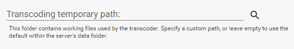
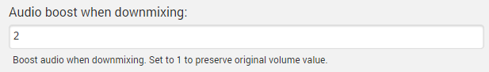
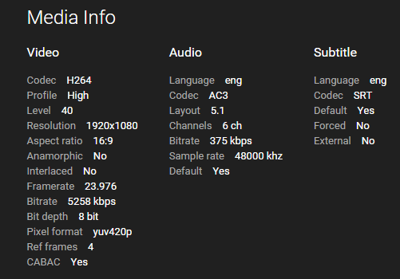

Transkodierung
Emby hat die Fähigkeit, während der Wiedergabe Ihre Medien zu konvertieren, um sie mit all Ihren Geräten kompatibel zu machen. Dieser Prozess wird als Transkodierung bezeichnet.
In den meisten Fällen wählen der Server und die Apps automatisch die idealen Einstellungen, um eine reibungslose Wiedergabe zu erreichen. Dies basiert auf einer Vielzahl von Faktoren, einschließlich Netzwerkleistung, Medieninformationen, Gerätefähigkeiten und verschiedenen Konfigurationseinstellungen. In einigen Fällen können Sie jedoch Ihre eigene Konfiguration bereitstellen, um das Wiedergabeerlebnis zu verbessern.
App-Einstellungen
Jede Emby-App verfügt über eine Einstellung, die als "Maximale Streaming-Bitrate" bekannt ist. Dies ist die wichtigste Einstellung, die in der von Ihnen genutzten App konfiguriert werden muss und den größten Einfluss auf die Bildqualität hat. Je höher Sie die Bitrate einstellen, desto besser wird die Qualität, allerdings wird eine schnellere Verbindung zwischen Gerät und Server erforderlich.
Nicht transkodierbare Formate
Server-Einstellungen
Zusätzlich verfügt der Server über einige Transkodierungseinstellungen, die konfiguriert werden können. Diese finden Sie, indem Sie das Server-Dashboard öffnen und zu Transcoding navigieren.

Die Hardware-Videodekodierer-Einstellung ermöglicht die Nutzung der folgenden Optionen:
- Intel Quick Sync
- NVidia NVENC
- Open MAX (OMX)
- VAAPI
NB. Dies ist keine vollständige Liste. Bitte wählen Sie die richtige Einstellung im Dropdown-Menü.
Dies sollte nur aktiviert werden, wenn Sie die geeignete Hardware haben. Andernfalls kann es zu Fehlern kommen. Wenn Sie unsicher sind, lassen Sie die Einstellung auf Auto, und das System versucht, dies automatisch zu erkennen.
Die Threadanzahl-Einstellung ermöglicht es Ihnen, festzulegen, wie viele Prozessoren jedem Transkodierungsjob zugewiesen werden. In den meisten Fällen sollte dies auf Auto belassen werden, da sich das System basierend auf den aktuellen Bedingungen anpasst.
Temporärer Pfad
Der Server muss während des Transkodierungsprozesses temporäre Dateien erstellen. Der Speicherort dieser Dateien kann konfiguriert werden.

Wenn Sie einen benutzerdefinierten Pfad angeben, stellen Sie bitte sicher, dass folgende Bedingungen erfüllt sind:
- Der Ordner ist beschreibbar
- Der Ordner wird für keinen anderen Zweck verwendet, da der Server alle Inhalte löscht, um ihn sauber zu halten.
Audio-Boost
Wenn Surround-Audio in 2-Kanal-Stereo-Audio konvertiert wird, führt dies häufig zu einer niedrigeren Lautstärke. Um dem entgegenzuwirken, können Sie einen Audio-Boost-Skalenfaktor konfigurieren, um die Lautstärke zu erhöhen.

Der Standardwert ist 2, was bedeutet, dass die Lautstärke verdoppelt wird, wenn Surround-Audio in Stereo umgewandelt wird.
Warum wird mein Medium transkodiert?
Wann immer möglich, spielen Emby-Apps Ihre Dateien direkt ab und vermeiden Transkodierung. Transkodierung wird nur verwendet, wenn Dateien von dem Gerät, von dem Sie abspielen möchten, nicht nativ unterstützt werden oder die Bitrate des Inhalts höher ist als die Bitrate-Einstellung der App.
Warum wird meine Datei transkodiert?
- Vergleichen Sie zunächst das Medienformat Ihrer Datei mit dem von der Emby-App unterstützten Format. Sie finden die Medieninfo im Emby-Webclient unten auf der Detailseite:

Wenn die Datei nicht nativ unterstützt wird, ist eine Transkodierung erforderlich.
Vergleichen Sie als nächstes die Bitrate Ihrer Datei mit der Bitrate-Einstellung in der App. Sie können die Bitrate Ihrer Datei überprüfen, indem Sie die Medieninfo in der Weboberfläche ansehen. Wenn die Bitrate der Datei höher ist als die Einstellung in der App, ist eine Transkodierung erforderlich. Das Erhöhen der Bitrate-Einstellung in der App kann helfen, die Transkodierung zu reduzieren, könnte jedoch die Wiedergabeleistung beeinträchtigen, wenn Ihre Netzwerkverbindung nicht schnell genug ist, um damit umzugehen. Emby-Apps beginnen, die automatische Bitrate-Erkennung zu unterstützen, um automatisch die höchstmögliche Bitrate auszuwählen. Die meisten Benutzer erzielen die besten Ergebnisse, wenn die Bitrate-Einstellung auf Auto belassen wird.
Schließlich: Sind Untertitel ausgewählt? Wenn Untertitel ausgewählt sind, kann dies eine Transkodierung auslösen, wenn die App das Untertitelformat nicht nativ unterstützt. Die meisten Emby-Apps unterstützen nativ textbasierte Untertitel (z.B. srt, vtt, etc.). Grafische Untertitel wie PGS und VobSub lösen eher eine Transkodierung aus.
Um mehr über die Formate zu erfahren, die von jeder Emby-App nativ unterstützt werden, besuchen Sie bitte den Dokumentationsbereich für diese App:
Meine Dateien sollten nicht transkodiert werden. Wie melde ich das?
Konzentrieren Sie sich zunächst auf ein einzelnes Beispiel. Bitte melden Sie dies in unserer Community:
Bitte stellen Sie sicher, dass Sie die folgenden Informationen bereitstellen:
- Eine Kopie der Medieninfo von der Weboberfläche
- Das Emby-Server-Log von dem Zeitpunkt, an dem Sie den Inhalt abgespielt haben
- Die Emby-Server-Transkodierungs-Logs aus der gleichen Zeit (falls vorhanden).
Logs können direkt innerhalb der Weboberfläche des Servers aufgerufen werden, indem Sie zu Hilfe -> Logs navigieren.